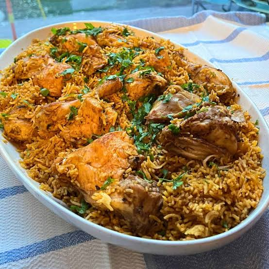

Majboos

Ingredient List:
- Base: Basmati rice, chicken or lamb, ghee/butter, water/stock.
- Beharat Spice Mix: Coriander, cumin, cinnamon, cardamom, black pepper, cloves, turmeric.
- Aromatics: Onions, garlic, ginger, green chillies, dried black limes (loomi).
- Hashweh Topping: Fried onions, boiled split yellow peas, raisins, ground cardamom.
- Daqqoos Sauce: Pureed tomatoes, minced garlic, tomato paste, hot green chillies, coriander.
Simple Steps to Make:
- Simmer chicken or lamb with whole spices, onions, garlic, and dried lime (loomi) until fully tender to create a rich broth. Strain and set the broth aside.
- Brush the poached meat with ghee and a pinch of saffron/turmeric, then oven-roast or crisp in a pan until golden brown.
- Cook soaked Basmati rice directly in the strained meat broth so it absorbs all the rich spice flavors.
- Sauté onions with boiled yellow split peas, raisins, oil, ground cardamom, and black pepper until caramelized.
- Plate the spiced rice, place the roasted meat on top, crown with the Hashweh mixture, and serve hot with Daqqoos tomato sauce.
To go back
Click here